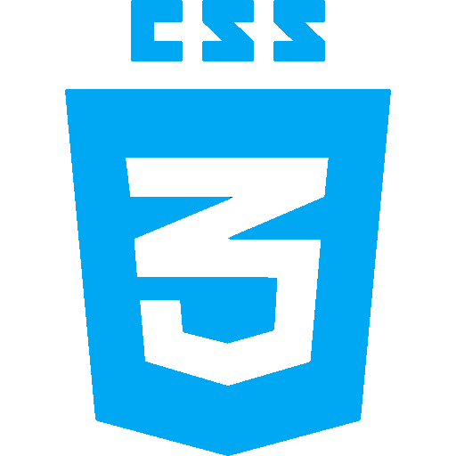
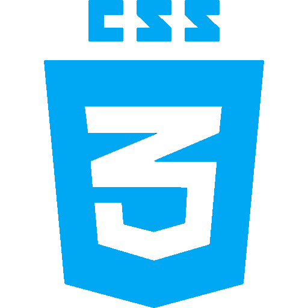

Menor Aprendiz
Durante minha experiência como Menor Aprendiz no Banco do Brasil, tive a oportunidade de contribuir para o sucesso da agência através da realização de uma ampla gama de tarefas, como
controle de estoque e manutenção dos arquivos físicos.
Além de cuidar da organização interna, também atendi diretamente aos clientes e funcionários, auxiliando na resolução de dúvidas e questões. Estas atividades me permitiram desenvolver habilidades de atendimento ao cliente e trabalho em equipe.
Estagiário
Durante meu estágio na Secretaria do Meio Ambiente e Sustentabilidade do Estado de Pernambuco, tive a oportunidade única de contribuir para a preservação e proteção do meio ambiente. Como Suporte de Informática na Biblioteca, meu papel era garantir o funcionamento do sistema e fornecer assistência aos usuários, ajudando a manter o fluxo de informações tão importante para a missão da secretaria.
Além de minhas responsabilidades relacionadas à tecnologia, também atuei na organização e manutenção da biblioteca, cuidando da acessibilidade e integridade dos livros, bem como do controle de estoque e almoxarifado. Este trabalho me permitiu desenvolver habilidades importantes como organização, responsabilidade e capacidade de trabalhar em equipe para alcançar objetivos comuns.


Operador
Atualmente, eu trabalho na empresa Datametrica como operador de call center receptivo. Já tive a oportunidade de trabalhar com dois produtos diferentes: o Saasep e a Anatel. No Saasep, eu era responsável por agendar consultas para os clientes. Atualmente, no produto Anatel, eu ofereço suporte aos consumidores de telecomunicações do Brasil, esclarecendo seus direitos e deveres. Além disso, também notifico as prestadoras de serviços de telecomunicações sobre possíveis descumprimentos dos direitos dos consumidores.
Como operador de call center, eu sempre busco prestar um atendimento de qualidade, oferecendo soluções eficientes para os problemas dos clientes. A minha comunicação clara e concisa me permite estabelecer relações positivas com os consumidores e garantir sua satisfação.
 
